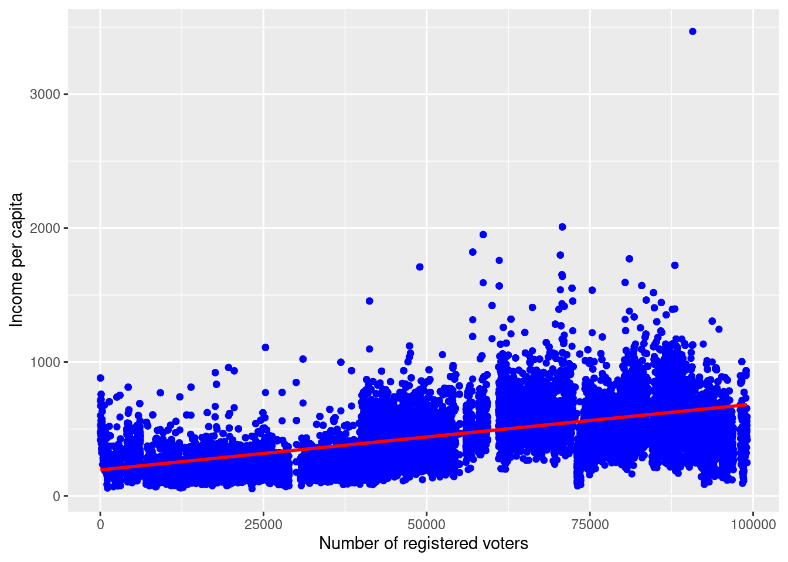
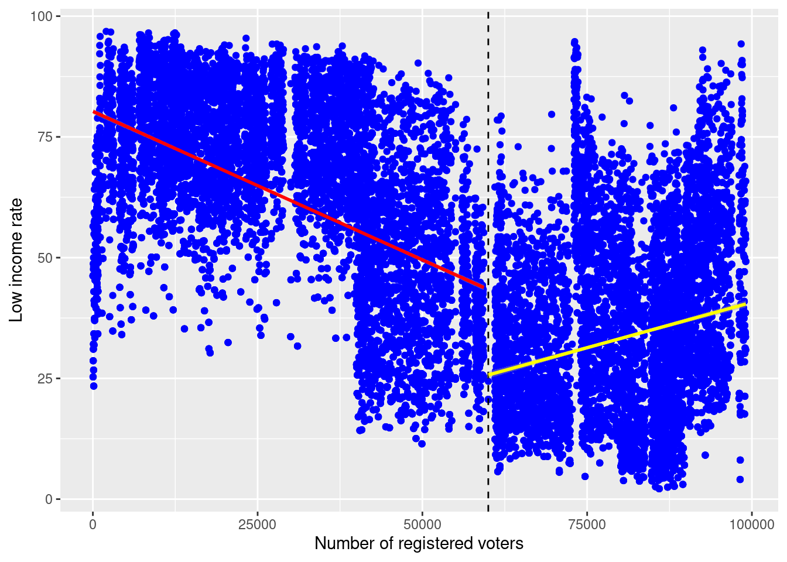
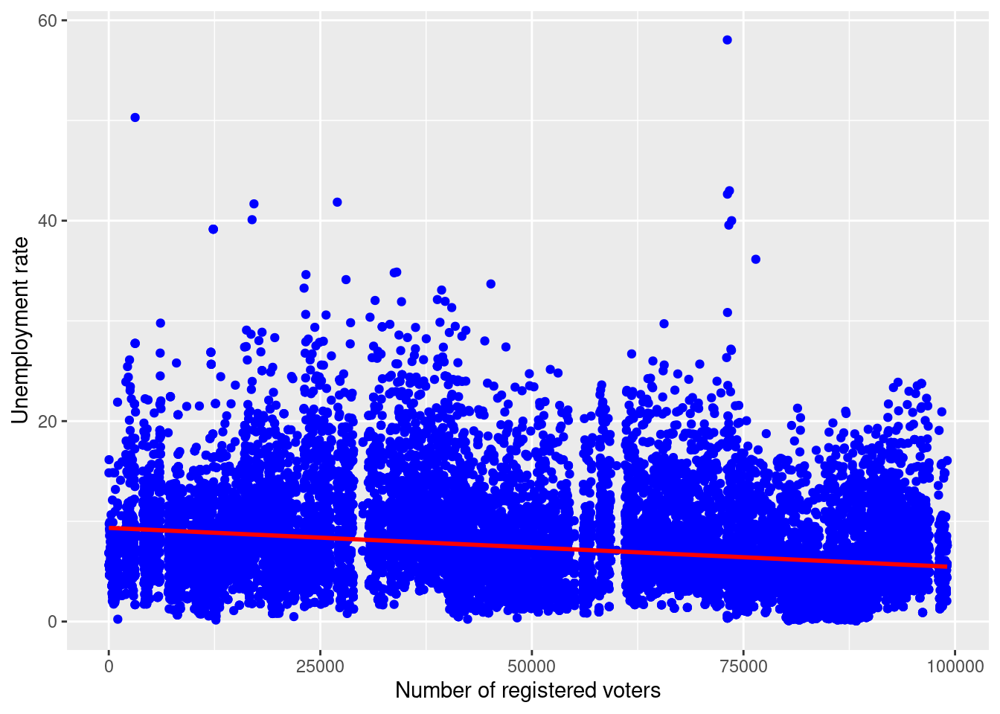
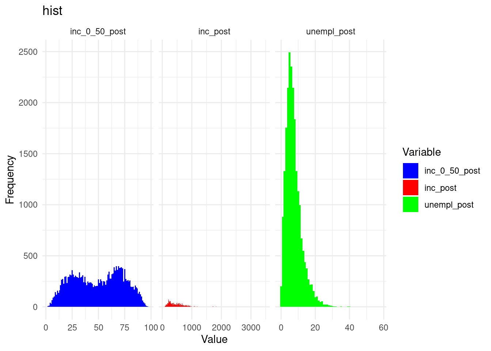
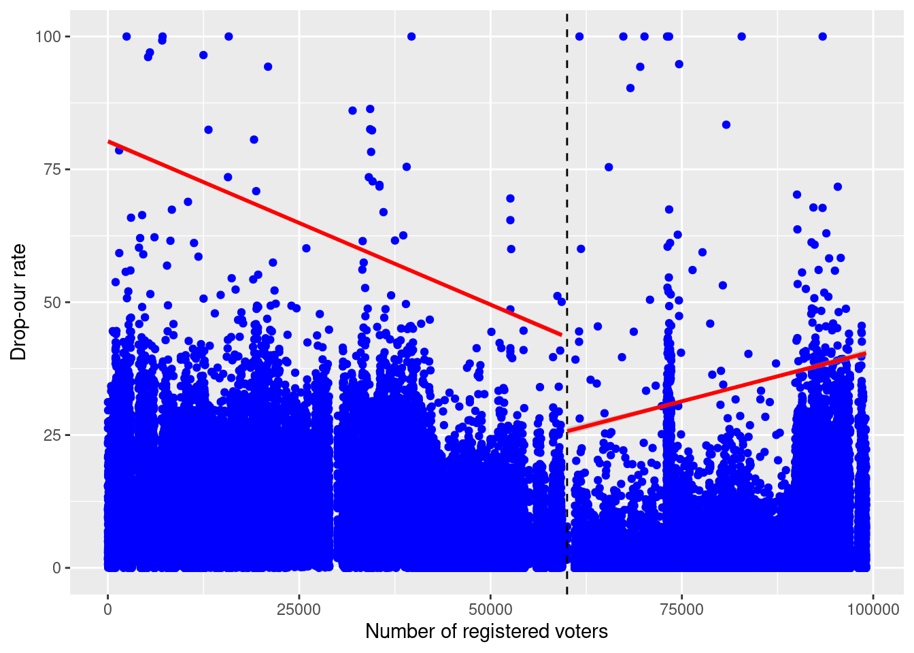

Package LibPath Version Priority Depends Imports LinkingTo Suggests
Enhances License License_is_FOSS License_restricts_use OS_type Archs
MD5sum NeedsCompilation Builttitle: “term paper 2” author: “Hao Wang Siqi Fei Xuecheng Gao” thanks: “Code and data are available at: https://github.com/groundUofT888/Term-Paper-2.git ; Replication on Social Science Reproduction platform available at: www.aeaweb.org/articles?id=10.1257/app.20210529” date: “February 12, 2024” date-format: long format: pdf: include-in-header: text: |
documentclass: article geometry: margin = 1in abstract: ” ” number-sections: true output: bookdown::pdf_document2 toc: false fig_caption: yes nocite: ‘@*’ bibliography: references.bib —
Introduction
In 2022, Brazil’s presidential election broke new grounds with an unprecedented turnout of over 150 million voters, capturing the attention of national and international media. The world had seen not just about the political tactics of the candidates, but also the public’s vested interest in how these elections could shape their day-to-day lives. This paper aims to study the influence of Brazil’s electoral system on three critical socio-economic indicators: income level, unemployment rate and educational resources. With a comprehensive look at recent data and trends, we will investigate how the details of voting and representation create a chain reaction throughout the economy, affecting everything from job opportunities to the quality of education. By collecting together statistical analysis with real-world implications, we’ll provide a clearer picture of the electoral system’s impact on the Brazilian populace and discuss the broader implications of these findings on social equality and economic stability.
Data
Methodology
This paper will replicate the survey data that was originally collected by Moya Chin, AMERICAN ECONOMIC JOURNAL: APPLIED ECONOMICS VOL. 15, NO. 3, JULY 2023 (pp. 183-209).
It uses data sets constructed from four data sources: 1) Brazil municipal election data (Tribunal Superior Eleitoral, 1996-2016); 2) Brazil demographic censuses (Institute Brasileiro de Geografia e Estatística, 1980, 1991, 2000, 2010); 3) Brazil school census (Ministério da Educação, 1997-2016); and 4) nighttime lights (National Oceanic and Atmospheric Administration, 1997-2016a,-).
R[@citeR] is the language and environment used for this analysis,supported by the robust features of Posit Cloud as our primary integrated development environment (IDE). Library includes ggplot2[@ggplot2], here[@here].
Git(version 2.39.2) is used as version control.
Features
这里需要被使用到的Data/文件/数据的名字，参考教授example里的2022年第一个例子，2.2.1部分 # Results
Result
Our statistical analysis began with a computation of the sample size which represents the population of Brazilians in 2022 election, with a population size of 203.1 million. We determined the sample size as 33188 in this study, ensuring the analysis result would be within an acceptable margin of error. This sample size was substantiated by Quota sampling, ensuring the representativeness of our data set.

For the above ?@fig-terc the trend line indicates a slight positive correlation between the number of registered voters and income per capita. This could suggest that in areas with more registered voters, there may be a slightly higher income per capita.

The plot Figure 1 appears to show a slight negative correlation, as indicated by the downward trend line. This suggests that as the number of registered voters increases, the low-income rate decreases slightly. However, the wide spread of the data points indicates that many other factors likely influence the low-income rate beyond just the number of registered voters.

Analyzing the Figure 2, there are noticeable differences. The first plot shows a vast spread of unemployment rates across varying numbers of registered voters, with a trend line that remains relatively flat. This suggests there isn’t a strong or clear correlation between the number of registered voters and the unemployment rate within the represented data set.
-drop out率的分析
三个汇总一下
table pie chart

